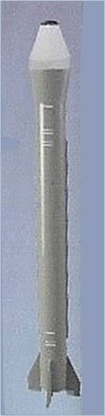
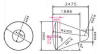
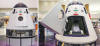
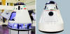
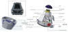
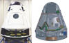
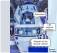
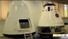
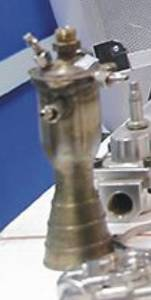
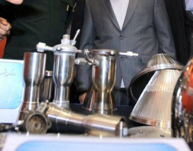

|
Iran's future human space program
Norbert Brügge,
Germany
TEHRAN, 2021, Jan. -- Iran's space
agency chief Morteza Barari said that the manned space capsule developed by
ARI will be delivered to ISA by February 2021 and could be launched
(suborbital flight) by June 2022.
TEHRAN,2018, Nov.
-- The model of the Iranian sub-orbital spacecraft
is again on display at the Kish
air show. What's new, is the adapter
to the launch vehicle, seen until now only in various illustrations..
TEHRAN, 2017, Sept. 10 -- Now,
the head of the Aviation Research Centre at Iran’s Ministry of Science, Research
and Technology, Fathollah Ommi, says Iran’s space programme is going on smoothly
and efforts are
underway to send a manned spaceship into space
within the
next eight years.
The project is to be carried out in two suborbital and orbital phases” said
Ommi, stressing that the project is in the study stage at the moment.
“We have had serious negotiations with Russian space centres and they are
expected to give us their final reply,” he said.
TEHRAN, 2017, June 01
-- Iran's semi-official ILNA news agency said that the country had ended its
project to explore the possibility of sending humans into space. The ILNA
report quotes Mohammad Homayoun Sadr, deputy head of the space organization,
as saying the cost of the project
to be prohibitive.
|
TEHRAN, 2016, June 20 -- Iranian
space scientists have concluded research on the conceptual design of a
homegrown manned spacecraft together with its carrier rocket.
The Iranian Space Agency is working to meet a 2025 deadline for sending
astronauts to space.
During the conceptual design phase, researchers designed and unveiled
a mock-up of a spacecraft, designed for sub-orbital spaceflight.
Now that the conceptual design phase is over. The craft, which would weigh
one ton, is designed to enter space in 9 main stages following the start
of engines of the launch vehicle and return to earth safely.
The Iranian manned spacecraft is scheduled to reach an altitude of 175
kilometers before descent.
TEHRAN, 2015, Oct. 05 --
Head of Iran’s Aerospace Research Center Fathollah Ommi said that the
project of sending human being to space had made progressed by 30 percent.
If the necessary support is given to us we can put an astronaut in the
sub-orbit in a year.
TEHRAN, 2014, June 06 --
Mansour Kabganian, Chief Director of Iran's national project for building
a spaceship, said that Iran is working on plans to build a spacecraft
to send more living creatures into lower orbits in future.
The spacecraft's dimensions are 1.5 meters and it weighs 100kg (meant
is 1000kg). The spacecraft will be sent "to a low (sub)orbit"
with a Kavoshgar rocket.
TEHRAN, 2014, May 19 -- Iran
announced plans to launch another Kavoshgar rocket into space in the near
future.
"A one-ton Kavoshgar will be sent to orbit at an altitude of 150
to 200 kilometers from the earth this year," Head of Iran’s Aerospace
Research Institute Mohammad Ebrahimi, who also supervises Iran's project
for sending man into space, said in an interview with the state-run Islamic
republic news agency.
He said that the geometrical specifications of the Kavoshgar to be used
in this launch will be similar to the previous ones, but the new Kavoshgar
is cylindrospheric in form, that is a mixture of cylinder and sphere.
Ebrahimi explained that the rocket enjoys recovery and backup systems
which make its launch more reliable and safe. He said once this Kavoshgar
is sent to the orbit, the third step to send astronauts into suborbital
space will be taken.
TEHRAN, 2014, May 04 -- The
head of Iran’s Aerospace Research Institute has said the country will
launch new generation of Kavoshgar rockets, jetting in a higher height
comparing to the previous rockets.
Dr. Mohammad Ebrahimi told Mehr News that Iran’s Aerospace Research Institute
has an orbital and suborbital project to send the living thing to the
space; “first we will send the living thing to suborbital space and then
with the advancement of the technology, it would be sent orbital space
and beyond; our ultimate goal is sending the first man from Iran to the
space,” he added.
Ebrahimi said that in current Iranian year the institute had plans to
send the new generation of Kavoshgar to space and added that like the
new Kavoshgar's, they are not cylindrical, but like world standard.
He held that to reach the capability to send a man to the space first
we should send an object up to 150 to 200 km height suborbital space and
then, “we should send this object to space to the orbit of 250 km around
the earth, both plans need a carrier to provide the energy needed for
the object’s movement.
TEHRAN, 2013, Dec. 24
-- Director of Iran Aerospace Systems Research Center Mohammad Ebrahimi
noted that the country has so far launched eight carriers into space and
the last two had living creatures onboard.
He said more time will be needed to develop a more complex carrier
capable of carrying human beings.
Ebrahimi further stated that Iran intends to take slow but scientific
and logical steps in the field of aerospace, adding that Iranian scientists
plan to cross the threshold of bio-space research in their next stride.
He added that planning and conceptual designing for the ninth Iranian-developed
carrier is already underway.
Quote: "The
next step is to send a Kavoshgar to a height of 175 km with a payload
of 500 kg" (or more)
|

|
|
|

Dimensions. Source ARI
|


Iran's one-man capsule
|


|

Capsule + adapter
|

Future capsule ? (left)
|


Thruster with stop/start capability
|
{kind=link}
{kind=link}